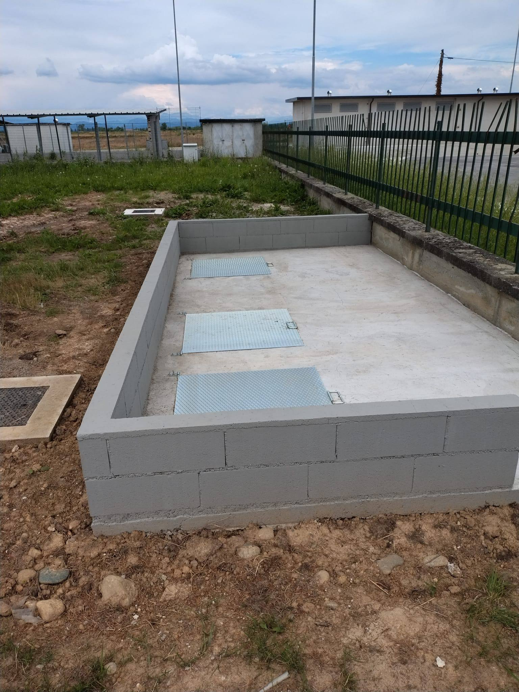
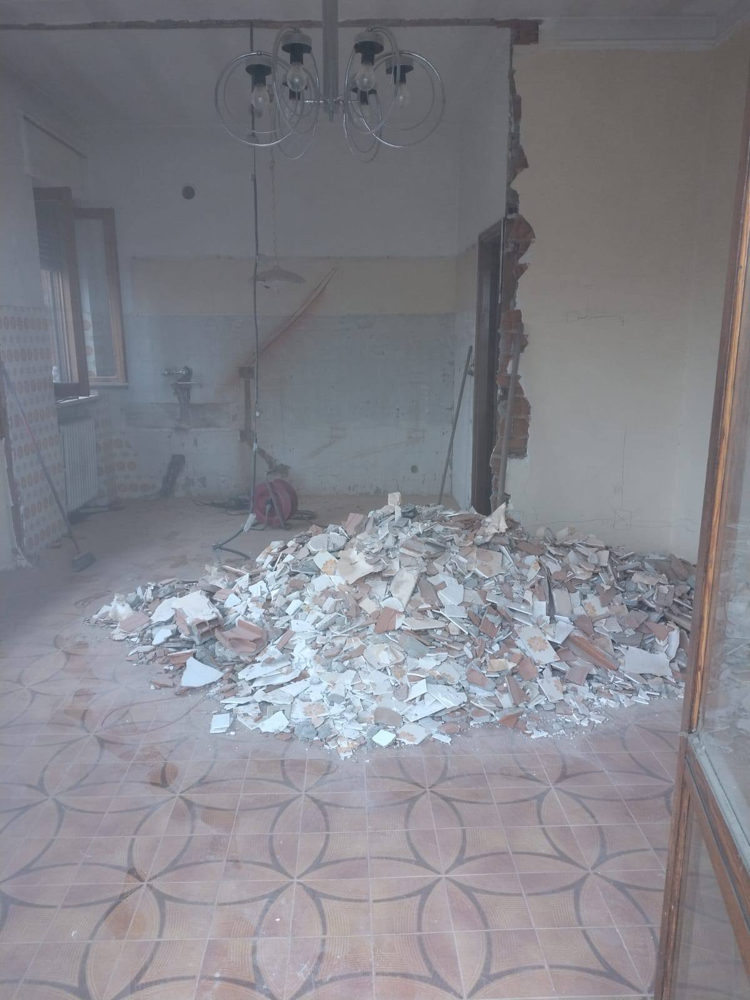
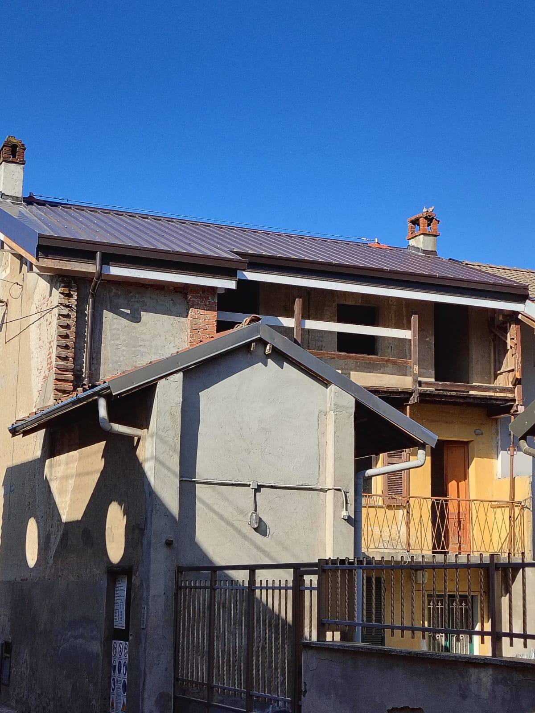
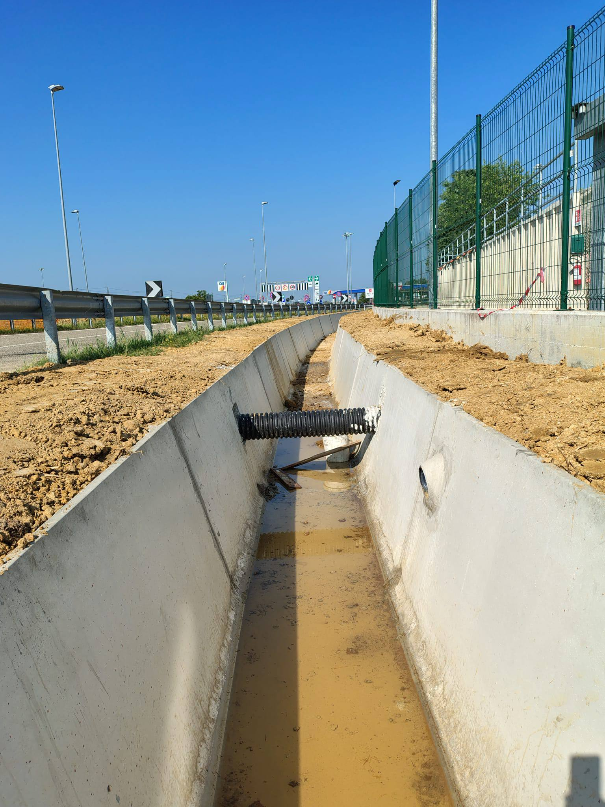
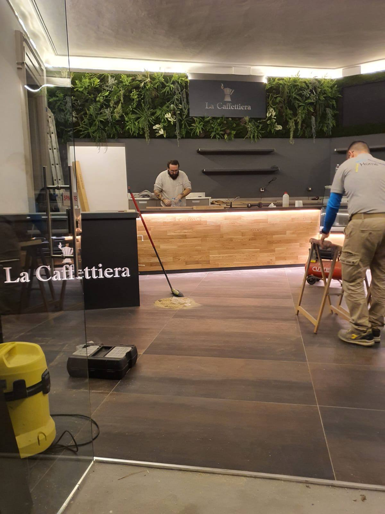

NICA S.R.L. realizza interventi edili e opere di costruzione e ristrutturazione, con attenzione alla qualità delle lavorazioni, alla sicurezza e alle esigenze del cliente.
30 anni di esperienza nel settore edile NICA S.r.l. opera da oltre 30 anni nel settore edile, realizzando interventi per committenti pubblici e privati. La qualità delle lavorazioni, la sicurezza sul lavoro e il rispetto dell'ambiente sono aspetti fondamentali del nostro modo di operare. Grazie all'esperienza maturata nel settore e all'attenzione dedicata a ogni intervento, puntiamo a realizzare opere affidabili, sicure e durature.
Qualità nei materiali
Sicurezza in cantiere
Rispetto dei tempi
Rispetto ambientale
I nostri servizi
Soluzioni edili per ogni esigenza
Interventi di costruzione e ristrutturazione, opere strutturali e lavorazioni complementari per rispondere alle diverse esigenze progettuali.
Costruzioni residenziali
Costruzioni commerciali
Strutture industriali
Opere edili speciali
Ristrutturazioni e manutenzioni
LE NOSTRE COMPETENZE
Opere infrastrutturali
Realizziamo interventi infrastrutturali per committenti pubblici
e privati, con attenzione alla qualità delle opere, alla sicurezza
sul lavoro e al rispetto dell'ambiente.
Intervento di messa in sicurezza di una scarpata in terra mediante realizzazione di rivestimento in cemento armato, comprensivo di preparazione e regolarizzazione della superficie, posa delle armature metalliche e successivo getto di calcestruzzo.

1 / 3
Isolotto di ispezione per vasche Imhoff
Realizzazione di un isolotto di ispezione per vasche Imhoff, utilizzate per la raccolta e il trattamento delle acque.

1 / 5
Ristrutturazione interna e open space
Intervento di ristrutturazione interna con demolizione di una parete divisoria per la realizzazione di un ambiente open space. Sono state eseguite le tracce necessarie per il nuovo impianto della cucina, con rimozione del vecchio impianto e successiva realizzazione e adeguamento del nuovo impianto. A completamento dei lavori sono state ripristinate e rasate le pareti interessate dalle opere, preparando per le successive finiture.

1 / 6
Rifacimento completo della copertura
Intervento di rifacimento completo della copertura dello stabile, comprendente la rimozione del vecchio tetto e la successiva realizzazione della nuova copertura in legno. Le lavorazioni hanno previsto la fornitura e posa della struttura portante in legno, con installazione delle travi principali, travi di colmo, travi di falda e relativi elementi strutturali, oltre alla posa delle perline in legno per la realizzazione del piano di copertura. A completamento della struttura è stata realizzata la stratigrafia della nuova copertura mediante pannelli isolanti/coibentati, con posa degli elementi necessari alla protezione e all'impermeabilizzazione del tetto e successiva realizzazione del manto di copertura. È stata inoltre prevista la fornitura e posa di una linea vita.

1 / 9
Raccolta e smaltimento delle acque meteoriche
Intervento comprendente lo scavo a sezione obbligata, la preparazione e messa in quota del piano di posa mediante realizzazione di magrone in calcestruzzo. Successivamente è stata eseguita la posa e messa in quota di canalette prefabbricate per la raccolta e il deflusso delle acque meteoriche, complete degli elementi di raccordo necessari al convogliamento delle acque verso il sistema di scarico esistente.

1 / 6
Ristrutturazione e riqualificazione di locale bar
Intervento di ristrutturazione e riqualificazione completa del locale, comprendente la realizzazione e adeguamento dell’impianto elettrico, la preparazione dei sottofondi e la posa della nuova pavimentazione e dei rivestimenti in piastrelle. Sono stati inoltre eseguiti lavori di rivestimento e finitura del banco bar, rasatura e preparazione delle pareti, seguiti da tinteggiatura e verniciatura degli ambienti. A completamento dell’intervento sono state realizzate le finiture decorative e l’allestimento degli elementi decorativi, con l’obiettivo di conferire al locale un aspetto rinnovato, funzionale e coordinato sotto il profilo estetico.
Contattaci
Il tuo progetto inizia da qui
Hai un'idea o un progetto da realizzare? Siamo pronti ad ascoltarti e a offrirti la soluzione più adatta.